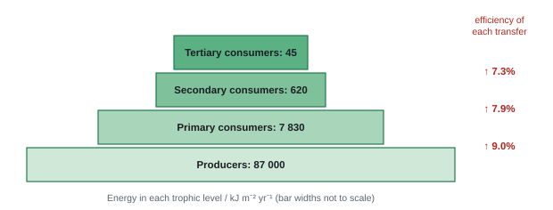
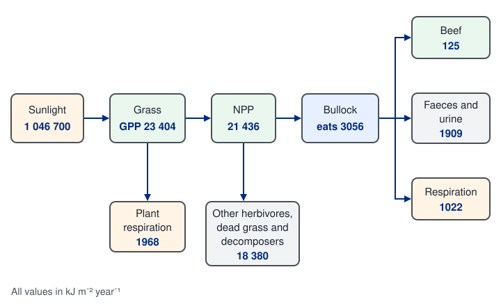
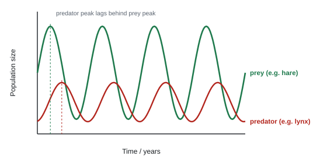
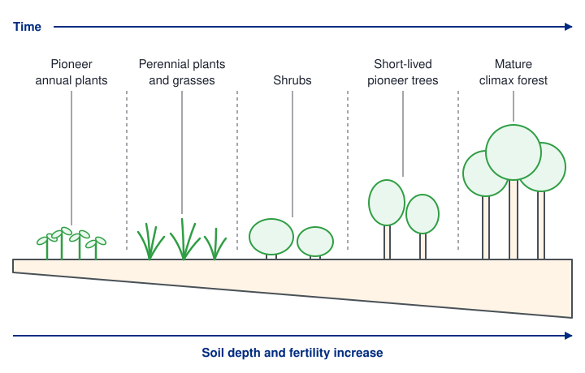
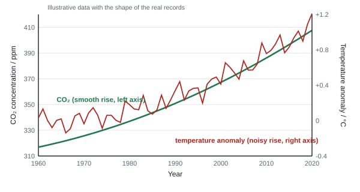
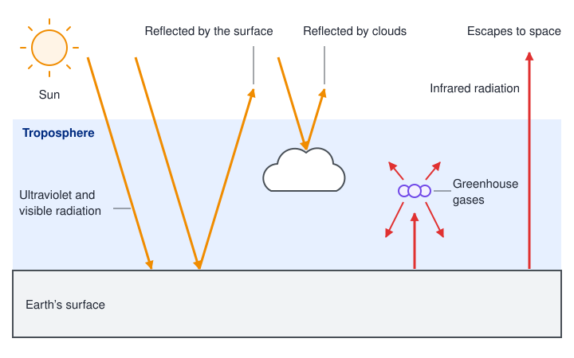
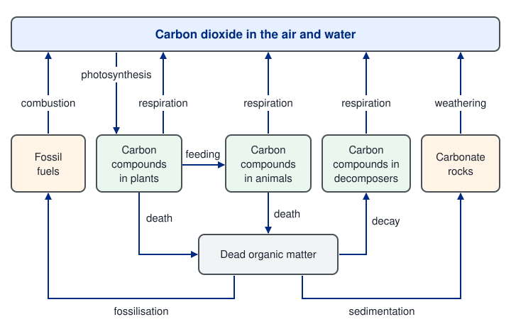
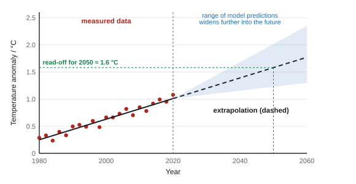
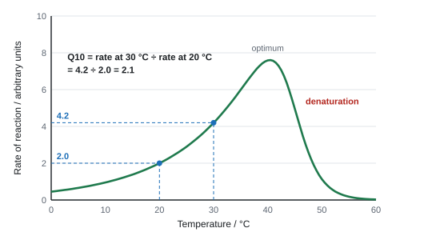
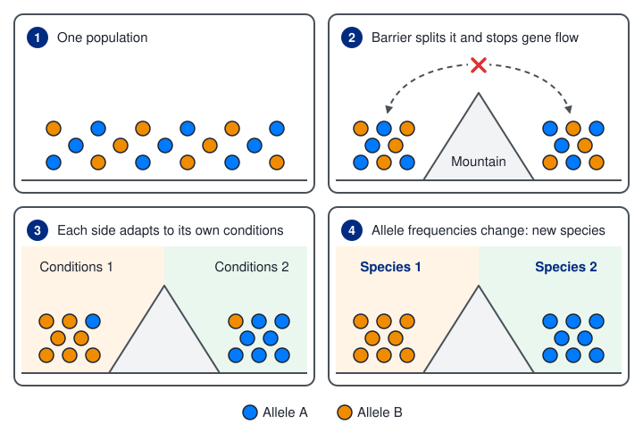

Ecology, environment and climate change
Ecology asks why organisms live where they do, how many of them there are, and how energy and carbon move between them and their surroundings. This page covers energy flow, distribution and abundance, succession, the carbon cycle, the greenhouse effect, the evidence for climate change and its effects on living things, and how a changing climate drives evolution and the formation of new species.
Spec5.9GPP, NPP and plant respiration
(i) Understand how gross primary productivity (GPP), net primary productivity (NPP) and plant respiration (R) are related. (ii) Be able to calculate NPP.
Definitions
- Primary productivity is the rate at which producers (plants, algae) make new organic matter by photosynthesis. It is measured as energy (or biomass) per unit area per unit time: kJ m⁻² yr⁻¹ (or g m⁻² yr⁻¹; per m³ in water).
- GPP (gross primary productivity): the total rate at which light energy is converted into chemical energy in organic molecules by photosynthesis.
- R (plant respiration): the energy the plant itself releases by respiring some of those molecules. Much of it is lost as heat.
- NPP (net primary productivity): what is left as new plant biomass. This is the energy available to primary consumers and decomposers.
NPP = GPP − R
Where the light energy goes
- Only about 1–3% of the light energy reaching a plant ends up as GPP, because:
- some light is reflected (especially green) or transmitted through the leaf;
- some wavelengths can't be absorbed by the pigments;
- some light misses chloroplasts or falls on non-photosynthetic parts;
- other factors (CO₂, temperature, water) limit the rate.
- Plants then respire a large share of GPP (often 20–50% or more), leaving the rest as NPP.
Worked example: NPP, and rearranging
1. A grassland has GPP = 24 600 kJ m⁻² yr⁻¹ and R = 15 900 kJ m⁻² yr⁻¹.
NPP = 24 600 − 15 900 = 8 700 kJ m⁻² yr⁻¹.
2. A forest has NPP = 3 400 kJ m⁻² yr⁻¹. Respiration uses 60% of GPP. Find GPP.
NPP is 40% of GPP, so GPP = 3 400 ÷ 0.40 = 8 500 kJ m⁻² yr⁻¹ (and R = 5 100).
3. Incident light 1.2 × 10⁶ kJ m⁻² yr⁻¹; GPP 1.8 × 10⁴ kJ m⁻² yr⁻¹.
Percentage captured = 1.8 × 10⁴ ÷ 1.2 × 10⁶ × 100 = 1.5%.
Measuring it
- Biomass is measured as dry mass (water content varies a lot): dry samples in an oven at about 80 °C until the mass stops changing (constant mass). Take samples from a known area at intervals: the gain in dry mass per area per year estimates NPP.
- Energy content can be found by burning dry samples in a calorimeter.
- Labels on a flow diagram: "gross primary productivity" (or GPP) going in, "(plant) respiration" (or R) leaving, NPP left over.
- "Energy lost by respiration". Not "energy lost for respiration".
- Units: "kJ m⁻² yr⁻¹" (energy per area per time).
- NPP that ends up below ground: "Calvin cycle produces GALP" → "sucrose" and "amino acids" → "transported in the phloem" → "used to synthesise biomass".
Often asked as: label a GPP–R–NPP diagram; MCQ on NPP = GPP − R; units of NPP; calculate NPP or a percentage of it; compare ecosystems; 6-mark on factors affecting root biomass.
Using NPP for animals. GPP and NPP are producer (trophic level 1) terms.
Adding reasons inside a diagram box ("energy lost for respiration") and losing the mark.
Leaving out the units, or writing them as kJ/m²/yr⁻¹. Use kJ m⁻² yr⁻¹.
- Factors that affect NPP and root biomass in a 6-mark answer: temperature (enzymes, RUBISCO), soil moisture (photolysis, transport), tree density (shading), soil nitrogen (amino acids), soil depth (WBI14 Oct 2022).
- Biomass expressed as carbon, in gigatonnes (Gt C) (WBI14 Oct 2021).
Spec5.10Efficiency of energy and biomass transfer
Know how to calculate the efficiency of biomass and energy transfers between trophic levels.
Where energy goes at each level
- Producers lose energy as light not absorbed (5.9) and in respiration.
- Consumers don't get all the energy in the level below:
- parts are not eaten (roots, bones, shells, fur);
- parts are eaten but not digested: lost in faeces (egestion), e.g. cellulose;
- some is lost in urine (excretion of urea);
- a lot is used in respiration and lost as heat (movement, keeping warm).
- Only the energy built into new biomass (growth and reproduction) is available to the next level. That is typically about 10% (often 5–20%), but not a fixed rule: calculate it from the data.
efficiency (%) = energy (or biomass) transferred to the higher trophic level ÷ energy (or biomass) in the lower trophic level × 100


Worked example: efficiency and ratios
Using the pyramid: producers 87 000, primary consumers 7 830 kJ m⁻² yr⁻¹.
Efficiency = 7 830 ÷ 87 000 × 100 = 9.0%.
Secondary consumers: 620 ÷ 7 830 × 100 = 7.9%.
Ratio of energy in producers : primary : secondary = 87 000 : 7 830 : 620. Divide by the smallest: 140 : 13 : 1. One side must be 1.
Trap: (87 000 − 7 830) ÷ 87 000 × 100 = 91% is the share lost, not the efficiency.
A salt-marsh grass, Spartina, has a GPP of 36 000 kJ m⁻² year⁻¹ and loses 28 000 kJ m⁻² year⁻¹ in respiration, so its NPP is 36 000 − 28 000 = 8000 kJ m⁻² year⁻¹.
Herbivorous insects take in 300 kJ m⁻² year⁻¹ of this energy.
Efficiency = 300 ÷ 8000 × 100 = 3.75%.
The energy of the previous level, here the producers' NPP, goes on the bottom because it is the energy that was available to be transferred.
Consequences
- Food chains are short (rarely more than 4–5 levels): after a few transfers there isn't enough energy left to support another population.
- Endotherms (birds, mammals) are less efficient than ectotherms (reptiles, insects) because they respire more to keep warm.
- Herbivores lose more in faeces than carnivores (cellulose is hard to digest).
- Eating lower in the food chain (more plants) feeds more people per hectare: fewer transfers, less energy lost.
- Farming: keeping animals indoors, warm and with limited movement means less energy is respired and more goes into growth (with welfare trade-offs).
Pyramids
| Pyramid | Shows | Can it be inverted? |
|---|---|---|
| Numbers | number of organisms at each level | yes (one oak tree supports thousands of insects) |
| Biomass | dry mass per area at one moment | occasionally (phytoplankton turn over fast, so their standing mass is small) |
| Energy | energy flow per area per year | never: energy is always lost between levels |
- No fourth trophic level: "not enough energy (in trophic level 3) to sustain a fourth trophic level", "energy is lost between trophic levels". "No energy" is ignored.
- Ratio: one value must be 1 (e.g. "98 : 10 : 1"; 100 : 10 : 1 accepted).
- Plant-based diet: "fewer trophic levels", "less energy lost from the food chain".
- Energy flow diagrams: arrows from each level to "respiration / heat", and the total lost.
Often asked as: efficiency calculation from a diagram; ratio of energy at three levels; why there is no fourth level; complete an energy-flow diagram; trophic level of a human diet; why a meat-eating diet needs more land.
If asked why keeping cattle indoors raises the efficiency of energy transfer, explain the cause: they move less and lose less heat keeping warm, so less energy is used in respiration and more of their food energy becomes new body mass.
Subtracting first, which gives the percentage lost. Divide the higher level by the lower one.
Rounding badly: give percentages to a sensible precision (e.g. 1–2 d.p.), no recurring decimals.
Choosing values that make no biological sense from a crowded diagram. Check which two numbers are the energy entering each level.
- Trophic level number (TLN) of a diet: a mean value, so humans can be at 2.3 or 2.8; TLN rises with more meat (WBI14 Oct 2023).
- Reading proportional diagrams (e.g. Voronoi diagrams of biomass, where area ∝ biomass) (WBI14 Oct 2021).
- Biomass is used to compare organisms because they differ in size and can't all be counted (WBI14 Oct 2021).
Spec5.11Population, community, habitat and ecosystem
Understand the terms population, community, habitat and ecosystem.
| Term | Meaning | Example (a rainforest) |
|---|---|---|
| Habitat | the place where an organism lives | the forest canopy where a slender loris lives |
| Population | all the organisms of one species living (and breeding) in a particular area at the same time | all the slender lorises in that forest |
| Community | all the populations of different species living and interacting in an area at the same time | lorises, tigers, trees, insects, fungi in that forest |
| Ecosystem | the community interacting with each other and with the abiotic (physical and chemical) environment | the forest's organisms plus its soil, water, light, temperature |
- Smallest to largest: population → community → ecosystem. A niche (5.13) is a species' role, not a place.
- An ecosystem is a dynamic system: energy flows through it (in as light, out as heat) and nutrients cycle within it.
- Microhabitat: a small part of a habitat with its own conditions (e.g. under a log).
These definitions are usually 2 marks each: one for the definition, one for using the organism and place named in the question. "A population is all the slender lorises living in this forest" beats a textbook sentence.
- Ecosystem: "organisms interacting with each other and with their (physical / chemical) environment". "Biotic and abiotic factors" accepted; "habitat" ignored.
- Habitat: "a place where organisms live" + the named place.
- Population: "organisms of one species in a particular area" + the named species.
- Community: "organisms of different species interacting in a particular area" + named organisms.
Often asked as: define all four using a food web or species list; define ecosystem; define population "as used in this context"; say what "sustainable" means in context.
Missing the word interact from the ecosystem definition. Listing biotic and abiotic factors without saying they interact loses the mark.
Calling a niche a habitat.
- "Sustainable" in context: e.g. producing enough food without damaging the environment for the future (WBI14 Jan 2022). A general definition without the context doesn't score (WBI14 Jun 2024).
Spec5.12Biotic and abiotic factors
Understand that the numbers (abundance) and distribution of organisms in a habitat are controlled by biotic and abiotic factors.
- Abundance: how many individuals there are. Distribution: where they are found.
- Abiotic factors: non-living, physical and chemical.
- Biotic factors: caused by living organisms.
| Abiotic factor | How it affects organisms |
|---|---|
| Light intensity (and wavelength) | photosynthesis rate, so plant growth; shade-tolerant v sun plants |
| Temperature | enzyme activity, growth, development, breeding times |
| Water / humidity | photolysis, turgor, transpiration; desiccation risk |
| Soil (edaphic): pH, mineral ions, depth, drainage | nutrient uptake (nitrate, phosphate), root growth |
| Oxygen and CO₂ | respiration (O₂ is low in waterlogged soil and warm water); photosynthesis |
| Salinity, wind, wave action | water potential and osmosis; physical damage |
| Biotic factor | How it affects organisms |
|---|---|
| Intraspecific competition (same species) | for food, mates, territory, light: limits population size |
| Interspecific competition (different species) | for the same resource: one species may outcompete the other |
| Predation | predator and prey numbers rise and fall in linked cycles |
| Food supply | more food → more survive and breed |
| Parasitism and disease | spread faster in dense populations |
| Mutualism, pollinators, grazing, human activity | e.g. cutting grass favours fast-growing species |
Predator–prey cycles

- The predator peak lags behind the prey peak, and predator numbers are usually lower.
- Real cycles are also driven by the prey's own food supply, disease and other predators.
Density-dependent and independent
- Density-dependent factors have a bigger effect in crowded populations: competition, disease, predation (mostly biotic).
- Density-independent factors affect a population whatever its size: floods, fire, frost (mostly abiotic).
- Together these keep a population around the carrying capacity: the largest population the habitat can support.
- Competition must say what for: "competition for {light / water / mineral ions / space}". Cutting a field: "the grass is faster growing, reducing the light available to other plants".
- Predator–prey: "lynx decrease due to starvation when the number of hares decreases"; "hares increase when they reproduce"; "hares decrease as they are hunted by more lynx"; "changes in numbers are staggered".
- Other biotic factors in a scavenging study: decomposers (microorganisms, insects), other scavengers, predators, pathogens, people.
- Classify: grass cutting = biotic (human activity); salt and wave action = abiotic.
Often asked as: classify factors; explain differences between habitats; other biotic factors that could affect results; sketch or explain a predator–prey graph; which region suits a species given temperature data.
Writing about abiotic factors when the question asks for biotic ones (and the reverse).
"Competition" with no resource named.
Sketching predator–prey curves carelessly: the predator peaks must come after the prey peaks and be offset by the same amount each time.
- Predator–prey oscillations and the lag between the peaks (WBI14 Jan 2025).
- Biotic factors that could confound a field study (WBI14 Jun 2022).
Spec5.13Niche
Understand how the idea of a niche explains the distribution and abundance of organisms in a habitat.
What a niche is
- A niche is the role a species plays in its habitat: what it eats, what eats it, when and where it feeds, the conditions it tolerates, and how it interacts with other species and the abiotic environment.
- Habitat = address; niche = job.
How niche explains distribution and abundance
- Distribution: a species is only found where the biotic and abiotic conditions match its adaptations (its tolerance range).
- Abundance: the more resources its niche gives access to, and the less competition, the larger the population.
- Competitive exclusion: two species cannot occupy exactly the same niche in the same habitat for long. The better-adapted one outcompetes the other, which dies out locally or shifts.
- Similar species can coexist when their niches differ slightly (resource partitioning): e.g. warblers feeding in different parts of the same tree, or two barnacle species at different heights on a rocky shore.
Worked example: two barnacles
Species A is found only on the upper shore; species B on the middle and lower shore.
- A tolerates drying out (desiccation) at low tide better, so it survives higher up.
- B grows faster and outcompetes A for space lower down, but can't survive the dry upper shore.
- So each occupies a different niche, which reduces competition, and both persist.
- "Niche is the role that an organism plays in its habitat" (with an example from the question).
- Distribution: "the two species are found on different parts of the rock", "a stated reason (food, temperature tolerance, desiccation)", "which reduces competition".
- Predator linked to prey: "the loris provides food for the tigers", "therefore tigers are found where lorises are found".
- Six-mark evolution of a new niche: use the data, mention variation in polygenic features, selection pressure, changed allele frequency, reduced gene flow, reproductive isolation.
Often asked as: explain how a distribution shows different niches; niche MCQs; define niche with an example; how a species came to occupy a new niche (6-mark).
Choosing "habitat" in a niche MCQ. A niche is a role, not a place.
Using abundance and distribution as if they mean the same.
- Adaptations in three types: anatomical (structure), physiological (body processes, e.g. producing metabolic water), behavioural (WBI14 Jan 2022, Jan 2020).
- Fundamental niche (everything a species could use) v realised niche (what it actually uses because of competition), as in the barnacle example.
Spec5.14Core Practical 11: ecology of a habitat
Study the ecology of a habitat, e.g. using quadrats and transects to find the distribution and abundance of organisms, and measuring the abiotic factors that matter there.
Choosing a sampling method
- You can't count everything, so you sample and scale up.
- Random sampling: for a fairly uniform area, or to compare two areas. Lay two tapes at right angles as axes; use random numbers to pick coordinates for each quadrat. This avoids bias.
- Systematic sampling along a transect: for a gradient (shore, edge of a wood, path, sand dunes). Place quadrats at regular intervals along a line.
- Line transect: record what touches the line at intervals.
- Belt transect: quadrats placed along the line, continuously or at intervals (interrupted belt).
Measuring abundance
| Measure | How | Use for |
|---|---|---|
| Density | count individuals per quadrat | large, separate plants (daisies) or slow animals (limpets) |
| Percentage cover | estimate % of the quadrat covered (a 10 × 10 gridded quadrat: each square = 1%) | grasses and mosses where individuals can't be told apart |
| Frequency | % of quadrats in which the species is present | quick surveys |
| ACFOR scale | abundant, common, frequent, occasional, rare | quick but subjective |
| Point quadrat | frame of pins; % cover = pins touching the species ÷ total pins × 100 | dense, low vegetation |
Core practical 11: method in brief (belt transect plus abiotic factors)
- Choose a habitat with a gradient (e.g. from open grassland into woodland). Lay a tape measure along it.
- Place a 0.5 m × 0.5 m quadrat every 2 m along the tape (interrupted belt transect).
- In each quadrat, record the abundance of each species (percentage cover or count). Use a key to identify species.
- At each quadrat, measure the abiotic factors: light intensity (light meter at the same height and time of day), soil moisture (moisture probe, or mass lost on drying), soil pH (probe or indicator), soil and air temperature (thermometer or probe). In water: oxygen probe, flow rate, turbidity.
- Repeat the transect at least 3 times (parallel lines) and calculate mean values.
- Plot a kite diagram (width of the kite = abundance at each point) to show distribution, and scatter graphs of abundance against each abiotic factor.
- Test for a correlation using Spearman's rank (r between −1 and +1). Compare the calculated value with the critical value at p = 0.05: if it is larger, reject the null hypothesis (no correlation).
Safety and ethics: check tides and weather; wash hands after handling soil; return organisms and stones as you found them; trample as little as possible.
The quadrat simulation in the interactive section at the bottom of the page lets you place quadrats and watch the population estimate settle.
| Year | Mean temperature / °C | Rank | Ring width / mm | Rank | d | d² |
|---|---|---|---|---|---|---|
| 1 | 9.1 | 2 | 1.2 | 1 | 1 | 1 |
| 2 | 9.4 | 3 | 1.5 | 3 | 0 | 0 |
| 3 | 9.0 | 1 | 1.3 | 2 | −1 | 1 |
| 4 | 9.8 | 4 | 1.6 | 4 | 0 | 0 |
| 5 | 10.2 | 6 | 1.9 | 6 | 0 | 0 |
| 6 | 9.9 | 5 | 1.8 | 5 | 0 | 0 |
| 7 | 10.5 | 8 | 2.0 | 7 | 1 | 1 |
| 8 | 10.4 | 7 | 2.2 | 8 | −1 | 1 |
Null hypothesis: there is no correlation between mean temperature and ring width.
Rank each variable separately from lowest to highest, find the difference in rank (d) for each year, square it and add: Σd² = 4.
rs = 1 − (6 × 4) ÷ (8 × (64 − 1)) = 1 − 24 ÷ 504 = 1 − 0.048 = 0.95.
The critical value for 8 pairs at p = 0.05 is 0.738. Since 0.95 is greater than 0.738, reject the null hypothesis: there is a significant positive correlation.
A significant correlation still does not prove that the higher temperature caused the wider rings; rainfall or carbon dioxide could have changed too.
Enough samples?
- Plot a running mean of species number (or abundance) against number of quadrats. When it levels off, you have enough.
- More quadrats and repeats → a more representative mean and a smaller standard deviation.
Worked example: estimating a population and a diversity index
Population. Ten random 0.25 m² quadrats in a 1 200 m² field contain a mean of 6.4 dandelions each.
Density = 6.4 ÷ 0.25 = 25.6 per m². Population ≈ 25.6 × 1 200 = 30 720 ≈ 31 000.
Simpson's diversity index (the formula is printed on the paper): D = N(N − 1) ÷ Σn(n − 1), where N = total number of organisms, n = number of each species.
Counts: species A 10, B 6, C 4. N = 20.
Σn(n − 1) = (10 × 9) + (6 × 5) + (4 × 3) = 90 + 30 + 12 = 132.
N(N − 1) = 20 × 19 = 380. D = 380 ÷ 132 = 2.88. A higher value means a more diverse community.
- Design (lab choice experiment): "all surfaces set up in the same container / water", "same surface area", "stated number (at least 100) of larvae", "leave for a period of time", "calculate number per unit area", "repeat (at least 3 times) and calculate mean and standard deviation".
- Diversity: "count the number of different species", "find the abundance of each species", "use the (bio)diversity index"; a successful restoration shows a higher index. Hardy–Weinberg is not accepted.
- Reliability with error bars: smaller error bars relative to the mean = more reliable; overlapping bars → difference may not be significant.
Often asked as: the quadrat or transect method itself hasn't been set in WBI14 2020–2026. What has: designing a sampling or choice experiment, estimating a population from survey counts, percentage calculations from survey data, using a diversity index to judge a restoration.
Putting each treatment in a separate container in a choice experiment. The organisms must be able to choose, so all options go in the same container.
Not naming how a variable is controlled. "Keep it the same" scores less than "measure at the same time of day".
Using the t-test or chi-squared for a correlation question. Use Spearman's rank (or Pearson).
- Simpson's diversity index: know what N and n are and that a higher value = more diverse (WBI14 Jun 2025, Oct 2025).
- Estimating a total population by scaling up survey counts (WBI14 Oct 2020).
- Mean and standard deviation in a design answer (WBI14 Jan 2020).
Spec5.15Succession
Understand the stages of succession, from colonisation of bare ground to a climax community.
What succession is
- Succession is the change in the species that make up a community over time.
- Primary succession starts on ground with no soil: bare rock after a volcanic eruption, sand dunes, ground left by a retreating glacier.
- Secondary succession starts where soil already exists but the community has been removed (fire, felling, ploughing). It is faster: soil, seeds and roots are already there.
The stages

| Stage | Organisms | How they change the conditions |
|---|---|---|
| Pioneer (colonisation) | lichens, mosses, algae, marram grass on dunes | break down rock (weathering); when they die, decomposers turn them into humus, starting a thin soil |
| Intermediate | grasses, ferns, small flowering plants, then shrubs | deeper soil, more organic matter, holds more water and mineral ions; more shelter and shade; pioneers are outcompeted |
| Climax community | trees (in most temperate climates), a few dominant species | stable, self-sustaining; little further change while the climate stays the same |
Each community modifies the environment so that it becomes more suitable for the next species (and often less suitable for itself). Conditions become less extreme. Biomass rises and, usually, so does biodiversity, although it may fall slightly at the climax as a few large species dominate.
Pioneer species are adapted to harsh conditions
- Tolerate extremes: drought, lack of shade, wind, temperature swings.
- Low requirement for minerals and soil; some fix nitrogen.
- Fast life cycles, lots of seeds or spores, wide dispersal (by wind), often asexual reproduction.
Abiotic changes through a sand dune or glacier succession
- Soil depth and organic matter (humus) increase as dead material is decomposed.
- Water retention and mineral ion content increase.
- pH usually falls as humus builds and rain leaches out minerals.
- Bare ground decreases.
- Carbon : nitrogen ratio: rises as decomposition adds carbon; falls as nitrogen is added by leaf litter and nitrogen-fixing and nitrifying bacteria.
Plagioclimax
- Human activity (grazing, mowing, burning) can stop succession at an earlier stage: a plagioclimax (e.g. grazed grassland, heather moorland). Conservation sometimes does this on purpose, to keep a habitat and its species.
- Succession: "a (series of) changes in the (types of) species (within a habitat) with time".
- Pioneer characteristics: "withstand {harsh / extreme} environments", "{desiccation / lack of shade}", "low requirement for {minerals / soil}", "{fast life cycle / grow fast / reproduce asexually / lots of seeds / wide dispersal}".
- Why stages: "changes to the habitat have to take place before a different organism can survive there", plus the named change and the organism that follows.
- Dune 6-mark (description + explanation): soil depth and organic matter rise "because these are older dunes", humus builds up, microorganisms decompose; pH falls; bare ground falls; species number rises as the soil becomes fertile.
- Insects on a carcass: the first species is the pioneer; later species arrive and the first "is outcompeted".
Often asked as: 6-mark data questions on sand dunes, glacier retreat or forest regrowth; three characteristics of pioneers; why succession happens in stages; define succession; regrowth after fire.
Describing what pioneers do when asked for their characteristics.
Saying succession is a change in the soil or habitat. It is a change in the species; the habitat changes cause it.
"Competition" without the resource (light, water, mineral ions, space).
Writing so much general description that the data parts (biodiversity, C : N) get no marks. Plan, and cover every part.
- Carbon : nitrogen ratio in soils during succession, needed for full marks (WBI14 Jan 2024).
- Secondary succession after fire or an eruption (WBI14 Oct 2022).
- A climax community is "not yet reached" while species numbers are still changing (WBI14 Oct 2024).
- pH is a log scale: a difference of 2 pH units is a 100-fold difference in H⁺ concentration (WBI14 Jun 2021).
Spec5.16Evidence for climate change
Understand the types of evidence for climate change (CO₂ records, temperature records, pollen in peat bogs, dendrochronology) and its causes, telling correlation apart from cause.
- Weather is day-to-day conditions. Climate is the long-term average pattern of weather (temperature, rainfall) in a region.
- Climate change is a significant, long-term change in those averages.
The four main kinds of evidence
| Evidence | What it measures | How it works | Limitations |
|---|---|---|---|
| Temperature records | air and sea temperature | thermometer readings worldwide since about 1850 | few stations early on, mostly in Europe and North America; methods and sites have changed |
| CO₂ records | atmospheric CO₂ concentration | direct measurement since 1958 (Mauna Loa, Hawaii); before that, air bubbles trapped in ice cores from Antarctica and Greenland (deeper = older; back about 800 000 years) | ice-core dating gets less precise with depth; one site may not represent the whole globe |
| Pollen in peat bogs | which plants grew in the past, so the climate then | peat is waterlogged, acidic and anaerobic, so decomposition is very slow and pollen is preserved; layers build up, deeper = older; each species' pollen has a distinctive shape and each species grows in a known climate range | pollen can blow in from far away; some species make more pollen than others; plants may have adapted; layers can be disturbed |
| Dendrochronology (tree rings) | climate year by year | one ring grows each year; wide ring = good growing conditions (warm, wet), narrow = poor; cores from living trees and old timber are overlapped (cross-dated) to extend the record back | ring width also depends on rainfall, disease, competition, pests, soil; only works where there are distinct seasons |
Correlation and cause

- A correlation means two variables change together. It does not show that one causes the other: a third factor could cause both, or it could be chance.
- To claim cause you need a mechanism (here, the greenhouse effect, 5.17), controlled experiments where possible, and consistent evidence from many independent sources.
For "describe the data": state the trend with values and years ("CO₂ rose from about 317 ppm in 1960 to about 414 ppm in 2020"), mention any fluctuations, then compare the two variables. Don't explain unless asked. Don't extrapolate from a single peak or trough of a noisy graph.
Worked example: tree age and growth rate
A core taken from the base of the trunk shows 69 rings. The tree is about 69 years old (one ring per year).
The trunk's radius at the base is 23 cm. Mean growth rate = 23 ÷ 69 = 0.33 cm yr⁻¹ (radius).
A ring narrower than its neighbours: a cooler (or drier) year → enzymes such as RUBISCO work more slowly → less photosynthesis, less GALP → less new xylem and biomass.
- Ring width: "narrower because (mean) temperatures were cooler", "{enzymes / RUBISCO} working more slowly", "photosynthesis slower / less GALP produced", "less {biomass / xylem} produced". The converse is accepted; "more water, wider rings" too.
- Tree age: sample "from the {trunk / base of the tree}" (with an increment borer), "count the rings", "one ring is made each year". Cutting the tree down or using branches is not accepted. Quote the diagram ("69 rings = 69 years").
- Cores are matched by aligning rings; an overlapping ring is counted once.
- Pollen: "type of plant present when conditions are favourable"; a change in pollen type means "conditions changed"; competition for named resources.
- Bog preservation: "conditions not suitable for decomposition", "cold, so (microbial) enzymes work slowly", "low pH", "waterlogged, so anaerobic, so not enough ATP", "protected from insects".
- Correlation: "it is only a correlation", "no evidence of cause".
Often asked as: name dendrochronology; why rings differ; how to age a tree; growth rate from a core; pollen diagrams over centuries; describe a temperature graph; correlation v cause.
Saying rings are "different" without saying narrower or wider and why, comparatively.
Measuring the diameter "of the tree" without saying at the base.
Reading a pollen diagram upside down: the deepest layer is the oldest.
Writing about succession when the question is about climate change.
- Increment borer and radius / circumference calculations from tree cores (WBI14 Oct 2021).
- Why bodies are preserved in bogs (WBI14 Jan 2025).
- Radiocarbon dating gets only 1 mark when asked how to age a tree; counting rings is the expected answer (WBI14 Jan 2024).
- Ice-core oxygen isotope ratios (¹⁸O : ¹⁶O) are another temperature record.
Spec5.17Anthropogenic climate change and the greenhouse effect
Understand the causes of climate change due to human activity, including how greenhouse gases cause the greenhouse effect.
The greenhouse effect
- Short-wavelength radiation from the Sun (UV and visible light) passes through the atmosphere and reaches the Earth's surface.
- The surface absorbs it, warms up, and re-emits energy as long-wavelength infrared (IR) radiation.
- Greenhouse gases in the atmosphere absorb IR and re-radiate it, some back towards the surface. Heat is trapped and the lower atmosphere and surface warm.

- This natural greenhouse effect keeps Earth about 30 °C warmer than it would be: liquid water and life depend on it.
- Anthropogenic climate change: human activities add more greenhouse gases, so more IR is trapped (the enhanced greenhouse effect), causing long-term changes in mean temperature and rainfall patterns.
The main greenhouse gases
| Gas | Human sources | Notes |
|---|---|---|
| Carbon dioxide | burning fossil fuels (power, transport, industry); deforestation (burning, and fewer trees to absorb CO₂); draining and burning peat | largest total effect; long-lived |
| Methane | cattle and other ruminants (gut microorganisms); rice paddies; landfill (anaerobic decay); leaks from gas and coal; thawing permafrost (a positive feedback) | traps far more heat per molecule than CO₂ but is at lower concentration and breaks down faster |
| Nitrous oxide | nitrogen fertilisers | very high warming effect per molecule |
| Water vapour | (mostly natural) | warmer air holds more, amplifying warming |
Oxygen and nitrogen are not greenhouse gases.
- Anthropogenic climate change: "caused by the effects of humans" and "changes to (mean) {temperature / rainfall}" ("long-term change in weather patterns" accepted). "Global warming" and "weather" alone are ignored.
- Greenhouse effect: "greenhouse gases {accumulate / increase} in the (upper) atmosphere"; "allow {UV / short wavelength / visible} light through to the Earth's surface"; "but {trap / absorb} IR (long wavelength) radiation"; "causing the Earth's {atmosphere / surface} to heat up".
- Human sources must say what is done: "burning (fossil) fuels", "farming cattle", "rice paddies", "landfill", "draining peat bogs", "deforestation".
- Volcanoes: ash and sulfur dioxide block incoming light, so less IR is re-emitted and temperatures fall; as the particles disperse, temperatures rise again. One eruption's CO₂ is tiny next to yearly human emissions.
Often asked as: which gases are greenhouse gases; UV and IR through the atmosphere; define anthropogenic climate change; explain the greenhouse effect; name human sources; volcano v human activity; global warming potential.
"Fossil fuels" without "burning".
Not saying where the gases build up (the atmosphere) or what heats up (Earth's surface / atmosphere).
Mixing up short and long wavelengths. Safer: UV / visible in, IR trapped.
Defining climate change only as "happens over a long time": say what changes (mean temperature, rainfall).
Plotting a variable against "global warming" instead of against temperature.
- Global warming potential and atmospheric lifetime of methane and nitrous oxide compared with CO₂ (WBI14 Jan 2025).
- Volcano data: sulfur dioxide and ash cool the Earth; anthropogenic CO₂ (about 3.5 × 10¹⁰ t a year) equals hundreds of eruptions (WBI14 Jun 2022).
- Using bacteria to remove methane could release other greenhouse gases (WBI14 Jan 2025).
Spec5.18The carbon cycle and reducing atmospheric CO₂
Understand how knowledge of the carbon cycle can be used to design ways of reducing atmospheric CO₂.
Stores (sinks) and flows (fluxes)

| Store | Form of carbon |
|---|---|
| Atmosphere | CO₂ (and methane) |
| Oceans | dissolved CO₂ and hydrogencarbonate ions; carbonate in shells |
| Living organisms | carbohydrates, lipids, proteins (biomass) |
| Soil and peat | dead organic matter, humus |
| Fossil fuels | coal, oil, natural gas |
| Sedimentary rocks | limestone and chalk (calcium carbonate) |
| Process | Effect on atmospheric CO₂ |
|---|---|
| Photosynthesis (plants, algae, phytoplankton) | removes CO₂: it is fixed into organic molecules |
| Respiration (plants, animals, decomposers) | returns CO₂ |
| Decomposition (6.16) | returns CO₂ from dead material via microbial respiration |
| Combustion of fossil fuels and biomass | returns CO₂ quickly |
| Feeding | moves carbon between organisms |
| Ocean exchange | CO₂ dissolves in cold water and comes out of warm water |
| Fossilisation, sedimentation | lock carbon away for millions of years |
- Human activity has sped up the flows into the atmosphere (combustion, deforestation, draining peat) and reduced the flows out (fewer forests).
Using the cycle to cut CO₂
| Method | How it works | Limitation |
|---|---|---|
| Burn less fossil fuel: renewables (solar, wind, tidal, geothermal), public transport, lift sharing, insulation | less CO₂ released by combustion | cost; weather-dependent; land use |
| Reforestation and stopping deforestation | more photosynthesis, so more CO₂ absorbed and fixed; carbon stored in wood | takes decades; trees can burn; needs land |
| Biofuels (5.26) | CO₂ released was recently absorbed by the crop | land, fertiliser and processing emissions |
| Protect peat bogs and soils | waterlogged peat decomposes very slowly, keeping carbon locked up | drained peat releases CO₂ |
| Protect oceans, mangroves, seagrass, kelp | phytoplankton and coastal plants fix carbon; dead material sinks | warming and acidification reduce uptake |
| Fewer cattle, less rice in paddies, capture landfill gas | less methane released | food supply and income |
| Carbon capture and storage | CO₂ from power stations pumped underground | expensive, unproven at scale |
Worked example: carbon units
1 Pg (petagram) = 10¹⁵ g = 10¹² kg. So 61 Pg = 61 × 10¹² kg = 6.1 × 10¹³ kg.
1 Gt (gigatonne) = 10⁹ t = 10¹² kg. So 11.3 Gt = 1.13 × 10¹³ kg.
Check standard form: one non-zero digit before the decimal point.
- Reducing CO₂ (method plus reason): "named way to reduce burning fossil fuels (lift sharing, public transport, solar power)" → "less carbon dioxide released"; "reforestation" → "more plants absorb more CO₂ for photosynthesis"; "reduce the number of cattle" → "less methane released".
- Return of carbon: "as carbon dioxide from respiration" of plants, animals or decomposers. CO, Co or C alone are wrong.
- Soil carbon: the ecosystem with the slowest decomposition keeps "more carbon" and releases "less CO₂".
- Whales: "a lot of carbon stored in the body", "dead organisms (on the sea floor) decompose very slowly" → "carbon sink".
Often asked as: carbon unit conversions; how carbon moves between air and ocean; how carbon returns to the air; methods to reduce CO₂ (including a 6-mark); carbon storage in soils.
Giving a method without the reason it lowers CO₂.
Saying soil carbon is used by plants for photosynthesis. Plants fix CO₂ from the air.
Replanting answers not linked back to climate change when the question is about climate.
- Decomposition of tea bags: dry mass found by removing water, and mass lost linked to CO₂ released by microbial respiration (WBI14 Oct 2021).
- Marine snow and coccolithophores carrying carbon to the deep ocean (WBI14 Oct 2024).
- Biofuel crops regrown "remove CO₂ for the Calvin cycle"; the phrase "carbon neutral" alone is ignored (WBI14 Jan 2026).
Spec5.19Extrapolation and climate models
(i) Understand that data can be extrapolated to make predictions, and that these are used in models of future climate change. (ii) Understand that climate models have limitations.
Extrapolation
- Extrapolation means extending a trend line beyond the range of the data to predict a value.
- Draw a line of best fit through the whole data set (not through peaks or troughs), extend it, and read off the value.

Models
- A climate model is a prediction of what might happen, based on data and current understanding (often a computer simulation). It runs scenarios: e.g. emissions cut quickly v "business as usual".
- Models are tested by running them on past data and checking they reproduce the climate we actually measured.
- Predictions are used to plan: flood defences, crop choices, energy policy, international agreements.
Why models have limitations
- Future emissions depend on human choices, technology and population: unknown.
- The climate system is complex and not fully understood: clouds, ocean currents, ice melt.
- Feedback loops and tipping points (e.g. thawing permafrost releasing methane; melting ice reflecting less light) could speed change up suddenly.
- Unpredictable natural events: volcanic eruptions, changes in solar output.
- Extrapolation assumes the trend continues in the same way. It may speed up, slow or level off (as sea-ice loss flattened for a while).
- The further ahead, the wider the uncertainty.
- Method: "extrapolation (of the line / graph)" / "extending the line (to 2050)". "Draw a line of best fit" alone is ignored.
- Model: "making predictions", "based on {knowledge / data}", "a visual representation (of what might happen)".
- Why a prediction might be revised: "climate change is happening faster than thought", "more ice melts", "scientists may use other data".
- Answers read off a graph must fall in the accepted range and have a sensible number of decimal places.
Often asked as: extrapolate to a future year or find the year a value is reached; what is a model; why a prediction may change or fail.
Extrapolating from the last peak or trough instead of from the overall trend.
Giving estimates to unrealistic precision (e.g. 1.6372 °C). Match the precision of the data.
Describing the diagram in words when asked what a model is.
- A falling trend (sea ice) can flatten, so a straight-line extrapolation fails (WBI14 Jan 2026).
- Extrapolation in other contexts, e.g. predicting disease deaths, and how a vaccine would change the estimate (WBI14 Jun 2022).
Spec5.20Effects of climate change on plants and animals
Understand how climate change (changing rainfall patterns and seasonal cycles) affects plants and animals: species distribution, development and life cycles.
The changes
- Higher mean temperatures; changed rainfall (more droughts in some places, more floods in others); more extreme weather; earlier springs and later autumns; melting ice and rising sea levels; ocean warming and acidification.
Effects on species
| Effect | Example and explanation |
|---|---|
| Distribution shifts | species move towards the poles or uphill to stay within their temperature range. Species that can't move fast enough, or have nowhere to go (mountain tops, islands), decline or go extinct locally |
| Development speeds up | higher temperature → more kinetic energy → more enzyme–substrate collisions → faster respiration, mitosis, DNA replication → insects and other ectotherms develop faster and may fit in more generations a year |
| Life cycles and timing | earlier flowering, leaf burst, egg-laying and migration. Species that respond to temperature shift, but those that respond to day length don't, causing a mismatch (e.g. chicks hatching after the caterpillar peak) |
| Rainfall | drought: less water for photolysis and turgor, stomata close, less CO₂ in, less photosynthesis; flooding: waterlogged roots short of O₂ |
| Sex ratios | in reptiles with temperature-dependent sex determination, warmer nests skew the ratio (e.g. more female turtles) |
| Pests and disease | vectors such as mosquitoes spread to new regions; parasites survive mild winters |
Worked example: building a cause–effect chain (ticks and moose)
Warmer winters → less snow → fewer ticks die when they drop off in early spring, and warmer conditions shorten the tick life cycle → more ticks per moose → more blood removed, fur lost, less insulation, wounds infected → moose weaker and die → moose population falls.
Top answers link every step from climate to the change in numbers.
- Species moving north: "distributed more towards the north", "related to a described change in climate", "effect explained" (enzymes less effective, prey moved, dehydration, plants die).
- Faster life cycle: "increase in temperature increases the kinetic energy … more collisions between enzymes and substrates", then a named process (respiration, mitosis, DNA polymerase).
- Polar bears: "berries and grass provide less energy than seal fat"; "energy used to swim further is greater than the energy gained".
- Sea ice from sea water melts faster: "higher salt concentration, so less heat needed to melt".
Often asked as: species moving north (3 marks); fertility or development against temperature; moose and ticks (6-mark); temperature-dependent sex determination; polar bears; coral reefs.
"Habitat destruction" with no link to temperature or rainfall. Say how the climate change affects the organism.
Only saying a species "moved north" for 3 marks: add the reason (its enzymes, food, water).
Not reading the axes before describing a correlation.
- Temperature-dependent sex determination: turtles are male at lower temperatures, tuatara male at higher, crocodiles male at middle temperatures; the pivotal temperature gives 50% males. The switch is epigenetic (DNA methylation, histone modification) (WBI14 Jun 2025).
- Longer (older) lizards have shorter telomeres because their cells have divided more (WBI14 Oct 2023).
- Coral: sexual reproduction gives variation; asexual keeps alleles that suit current conditions (WBI14 Oct 2025).
Spec5.21Temperature, enzyme activity and Q10
Understand how temperature affects the rate of enzyme activity, and the effect on plants, animals and microorganisms, including the temperature coefficient Q10.
Why rate changes with temperature
- Below the optimum: raising the temperature gives enzyme and substrate molecules more kinetic energy, so they move faster → more frequent collisions → more enzyme–substrate complexes form per second → faster rate. At low temperature the enzyme is not damaged; it just works slowly.
- Above the optimum: atoms in the enzyme vibrate so much that hydrogen bonds and ionic bonds holding the tertiary structure break. The active site changes shape, so the substrate no longer fits (it is no longer complementary): the enzyme is denatured. This is usually permanent.

Q10, the temperature coefficient
Q10 = rate of reaction at (T + 10) °C ÷ rate of reaction at T °C
- Q10 tells you how many times faster a reaction goes for a 10 °C rise. For most enzyme reactions between about 0 and 40 °C, Q10 ≈ 2–3: the rate roughly doubles.
- Q10 has no units.
- Q10 ≈ 1 means temperature has little effect (e.g. a physical process like diffusion, or near the optimum).
Read the rate at two temperatures 10 °C apart, below the optimum. Suppose the rate is 12 units at 15 °C and 27 units at 25 °C.
Divide the rate at the higher temperature by the rate at the lower one: Q10 = 27 ÷ 12 = 2.25.
Q10 only describes the rising part of the curve. Above the optimum, denaturation takes over and the rate falls.
The Q10 model in the interactive section at the bottom of the page lets you change the starting temperature and the size of the rise.
Worked example: Q10 from a graph
1. From the graph: rate at 20 °C = 2.0 units; rate at 30 °C = 4.2 units.
Q10 = 4.2 ÷ 2.0 = 2.1 (no units).
2. From a table: oxygen production by algae is 6.0 at 10 °C and 21.5 at 20 °C.
Q10 = 21.5 ÷ 6.0 = 3.6.
Effects on organisms
- Ectotherms (most plants, invertebrates, reptiles, fish, microorganisms) have body temperature close to the environment's, so their metabolism, growth and development rates change directly with temperature.
- Endotherms (mammals, birds) keep their body temperature roughly constant, but their food plants and prey are affected.
- Plants: photosynthesis (RUBISCO) and respiration both speed up with warmth until enzymes denature; very high temperatures also close stomata.
- Microorganisms: decomposition is faster when warm (more CO₂ released), and pathogens grow faster.
- Each species has its own optimum and zone of tolerance; enzymes of species from hot places (C4 plants, thermophilic bacteria) have higher optima.
- Q10 = "rate at (T + 10 °C) ÷ rate at T". To describe it: "read off the rate at two temperatures 10 °C apart", "divide the rate at the higher temperature by that at the lower".
- Calculation marks: "values for (e.g.) 20 °C and 30 °C read from the graph", "substituted into the equation", answer "with no units".
- Explanation: "more kinetic energy", "more frequent / energetic collisions", "more enzyme–substrate complexes"; high temperature: "enzymes denature / active site changes shape". Low temperature: "not enough kinetic energy".
- Sketch: rises to an optimum (about 40 °C for many enzymes), then falls steeply.
- Enzyme stored for longer loses activity: "active site changes shape", "more vibration between R groups".
Often asked as: calculate Q10 from a graph (up to 4 marks); describe how to find Q10; sketch rate against temperature; explain photosynthesis or development rates at different temperatures; why decomposition is faster when warm.
Reading the rate at the lower temperature and adding 10 to the rate. You add 10 to the temperature and read a second rate.
"Enzymes are killed", "the active site denatures", "enzymes start to denature". The enzyme denatures; it was never alive.
Too many decimal places, or units on Q10.
Drawing tangents and subtracting them: Q10 uses rates read at two temperatures.
- Optimum temperatures differ between species (C3 v C4 plants; Spartina about 35 °C v Leucopoa about 23 °C) and this affects where they grow (WBI14 Jan 2024, Jan 2022).
- Zone of tolerance of a fish linked to its enzymes (WBI14 Jan 2023).
- If the two temperatures are not 10 °C apart: Q10 = (R₂ ÷ R₁)^(10 ÷ (T₂ − T₁)). Not usually needed, but useful for CP12 data.
Spec5.22Core Practical 12: temperature and development
Investigate how temperature affects the development of organisms (e.g. seedling growth rate or brine shrimp hatching rate), using organisms ethically.
Why it matters
- Development depends on many enzyme-controlled reactions (respiration, protein synthesis, mitosis). Warmer conditions speed these up (to an optimum), so climate change alters how fast organisms grow and hatch (5.20, 5.21).
Core practical 12: method in brief
Brine shrimp hatching
- Make up salt water of the same concentration (e.g. 35 g dm⁻³) in identical containers, same volume each.
- Set the containers in water baths or incubators at a range of temperatures, e.g. 15, 20, 25, 30, 35 °C. Let them reach temperature.
- Add the same number of eggs (e.g. 40, counted under a hand lens, or the same mass) to each container.
- Keep light, salinity, pH, volume, aeration and egg batch (age) the same.
- Count the hatched larvae at set intervals (e.g. every 12 h for 48 h). Use a lamp briefly to attract larvae for counting (they swim towards light), keeping it away from the containers between counts so it doesn't heat them.
- Repeat at least 3 times at each temperature; calculate mean % hatched.
Seedling growth
- Use seeds of the same species and variety, germinated together; choose seedlings of the same starting height.
- Grow them in incubators at different temperatures with the same light, water, soil and humidity.
- Measure the height (or dry mass of a sample) every day for, e.g., 10 days.
- Growth rate = mean change in height ÷ number of days.
Results and processing
Worked example: brine shrimp hatch rate
40 eggs per container, counted after 48 h (mean of 3 repeats):
| Temperature / °C | 15 | 20 | 25 | 30 | 35 |
|---|---|---|---|---|---|
| Mean number hatched | 6 | 13 | 25 | 31 | 18 |
| % hatched | 15 | 33 | 63 | 78 | 45 |
| Hatch rate / larvae h⁻¹ | 0.13 | 0.27 | 0.52 | 0.65 | 0.38 |
% hatched at 25 °C = 25 ÷ 40 × 100 = 63% (62.5 rounded). Rate = 25 ÷ 48 = 0.52 larvae h⁻¹.
Q10 between 15 and 25 °C = 25 ÷ 6 = 4.2 (use the unrounded counts: the time is the same, so it cancels).
Fewer hatch at 35 °C: enzymes begin to denature, and warm water holds less dissolved oxygen.
Variables, evaluation, ethics
- IV: temperature. DV: number hatched per unit time, or growth in height per day. Controls: listed in the method.
- Errors: temperature drift in water baths (check with a thermometer); eggs are hard to count accurately (use mass and a calibration); hatching is hard to judge; seedlings differ genetically. Repeats, means and standard deviation (error bars) show whether differences are significant.
- Ethics: invertebrates and plants raise fewer ethical concerns than vertebrates. Use the smallest number that gives reliable results; avoid temperatures known to kill; handle gently; dispose of or release organisms responsibly (don't release brine shrimp into local waters).
- Choosing organisms for research (nematodes): "lower-order organisms / fewer ethical issues", "short life cycle, so several generations can be studied", "lay large numbers of eggs, so large sample size / repeatability", "live in a range of environments, so controls are possible".
- Design answers: name the IV and its range, how the DV is measured, at least three controlled variables and how each is controlled, repeats and a mean.
- A "range of sizes" (or temperatures) must be used when that is the independent variable, not "controlled".
Often asked as: the method itself hasn't been set in WBI14 2020–2026. Related questions: development or size against temperature in insects and lizards, fertility against temperature, why a species suits laboratory research, designing a preference investigation.
Controlling the variable the question asks you to vary.
Ignoring dissolved oxygen: higher temperature lowers it, which also affects hatching.
- Q10 as the natural way to process development data (WBI14 Oct 2023, Oct 2025).
- The ethical case for invertebrates and their practical advantages (WBI14 Oct 2025).
Spec5.23Evolution by mutation and natural selection
Understand how evolution (a change in allele frequency) can happen through gene mutation and natural selection.
Evolution is a change in allele frequency
- A gene is a length of DNA coding for a polypeptide; alleles are different versions of the gene.
- The gene pool is all the alleles in a population. Allele frequency is how common one allele is in the gene pool.
- Evolution is a change in allele frequency in a population over generations.
Where new alleles come from
- Gene mutation: a change in the DNA base sequence (substitution, insertion, deletion). Most are neutral or harmful; a few give an advantage in particular conditions.
- Mutations are random: they happen whether or not they are useful. They must occur in cells that make gametes (or in a bacterium itself) to be inherited.
- Meiosis and random fertilisation shuffle alleles into new combinations, adding variation.
Natural selection: the five-step chain
- Mutation produces a new allele, so there is variation in the population.
- A change in the environment (a new chemical, predator, disease, food source, climate) acts as a selection pressure.
- Individuals with the advantageous allele are more likely to survive and reproduce.
- They pass the allele on to their offspring.
- Over many generations, the frequency of the allele increases in the population.
Gene mutations produce new alleles, so individuals in a population vary in their alleles and phenotypes.
A selection pressure, such as a warmer climate, means that some individuals are better adapted than others.
Individuals with an advantageous allele are more likely to survive, reproduce and pass that allele on to their offspring.
Natural selection acts on phenotypes, but only the alleles are inherited.
A greater proportion of the next generation carries the advantageous allele, and the process repeats each generation.
The frequency of the advantageous allele increases over generations. This change in allele frequency is evolution.
Worked example: antibiotic resistance
A mutation in one bacterium's DNA produces an allele for an enzyme that breaks down an antibiotic. The antibiotic is a selection pressure: susceptible bacteria die, the resistant one survives and divides by binary fission, forming a clone of resistant bacteria. The resistance allele can also be passed to other bacteria on a plasmid (conjugation). The frequency of the resistance allele rises.
- Resistance spreads fastest in organisms with short life cycles, high mutation rates and many offspring: bacteria, insects, viruses.
- Many features (size, horn length, neck length) are polygenic: controlled by many genes, so they show continuous variation, and selection shifts the mean.
Write the chain in the context of the question, naming the organism and the selection pressure. Avoid purpose words: organisms don't mutate "in order to" survive. The mutation was already there before the selection pressure arrived.
- "Mutation (in the DNA)" produces a new allele; "acts as a selection pressure"; "survive and reproduce"; "pass the allele on to offspring"; "increasing the allele frequency".
- Bacteria: "by asexual reproduction / binary fission / conjugation / plasmids", "forming a clone of resistant bacteria".
- Polygenic: "variation in (size) / polygenic", "continuous variation".
- Not accepted: "the selection pressure causes the mutation", "gene" used for "allele", "immune" for "resistant".
Often asked as: explain how a trait evolved, in almost every paper (microbes digesting plastic, insecticide resistance, antibiotic resistance, squirrel pouches, apple maggot flies, divers' larger spleens); why short life cycles speed it up; 6-marks combining data with natural selection.
"The pesticide caused the insects to mutate." The mutation happens randomly first; the pesticide only selects.
Generic answers that never mention the context.
Saying bacteria become "immune". They become resistant.
Mixing up gene and allele.
- Short life cycle, high mutation rate and many offspring explain fast evolution of resistance (WBI14 Jan 2021).
- Horizontal transfer of resistance plasmids between bacteria (WBI14 Oct 2020, Jun 2024).
- Evolution of a human population (larger spleens in divers) in a 6-mark (WBI14 Jun 2024).
Spec5.24Isolation and speciation
Understand how isolation reduces gene flow between populations, leading to allopatric or sympatric speciation.
Species and gene flow
- A species is a group of organisms that can interbreed to produce fertile offspring.
- Gene flow is the movement of alleles between populations when individuals interbreed. It keeps populations genetically similar.
- Speciation is the formation of a new species. It needs reproductive isolation: gene flow between two populations stops.
How speciation happens
- A population is split into groups that can't interbreed (isolation), so gene flow stops.
- Each group has different mutations, and faces different selection pressures (and chance effects in small populations: genetic drift).
- Allele frequencies change differently in each group.
- Over many generations the groups become so different that, even if they meet again, they can't interbreed to produce fertile offspring: they are separate species.
Two types
| Allopatric | Sympatric | |
|---|---|---|
| Where | populations in different places | populations in the same place |
| Isolation by | a geographical barrier: sea, mountain, river, road, habitat fragmentation | a reproductive barrier with no physical separation |
| Example | lemurs in Madagascar isolated from ancestors in Africa | apple maggot flies switching to a new host plant; species with different diets or breeding times in one habitat; polyploid plants |

Reproductive isolating mechanisms (often the cause in sympatric speciation)
- Temporal: breed or are active at different times of year or day.
- Behavioural: different courtship displays, songs or calls.
- Mechanical: incompatible genitalia or flower structure.
- Ecological / habitat: use different parts of the habitat or different host plants.
- Gametic: sperm can't fertilise the egg (incompatible gametes).
- After mating: hybrids die early or are sterile (e.g. mules).
- Sympatric speciation: "formation of one new species (from a pre-existing one)" "while both continue to live in the same location" (or "without a physical barrier"). Not "two new species" or "subspecies".
- Allopatric: "isolated (from a common ancestor) by a geographical barrier".
- Habitat fragmentation: "genetic diversity decreases because gene flow is reduced", "inbreeding".
- Wildlife corridors: "populations can mix / mate", "increases the gene pool / gene flow", "prevents inbreeding", "prevents extinction".
- Isolation examples: "eggs laid at different times of year", "different breeding behaviours", "incompatible gametes / genitalia".
Often asked as: which type of speciation happened (lemurs); define sympatric speciation; fragmentation and genetic diversity; a corridor between tiger populations; isolating mechanisms between two fly species; endemic species.
"One species becomes two new species." The original species usually continues; one new species forms.
"Not due to a geographical barrier" instead of the positive "in the same area".
Writing a full speciation account when the question only asks about genetic diversity in one species.
Describing allopatric speciation when the context is clearly sympatric (or the reverse).
- Endemic: found only in one place (e.g. one country), not "its habitat" (WBI14 Jan 2023).
- Gene pool, gene flow and allele combinations in a wildlife-corridor question (WBI14 Jun 2025).
- Learned behaviour (birdsong) lost when a population becomes too small (WBI14 Jun 2022).
- Polyploidy in plants: an error in meiosis doubles the chromosome number; the polyploid can't make fertile offspring with the parent species, so a new species forms in one generation (a classic sympatric example).
Spec5.25Who reaches the conclusion: controversial issues
Understand that scientific conclusions about controversial issues (such as how much humans affect climate, and what should be done) can depend on who is reaching them.
Why people reach different conclusions
- Data: has the whole data set been used, or only selected parts? Is the sample big enough? Has it been repeated by others? Is the result statistically significant? Is it a correlation being presented as a cause?
- Source: who funded the work, and who benefits from the conclusion? Fossil-fuel companies, governments facing elections, campaign groups and businesses may each have financial, political or commercial interests.
- Publication: has it been peer reviewed in a scientific journal, or is it a press release, blog or advert?
- Expertise: is the author qualified in this field?
- Complexity: climate has natural variation too; a single hot summer or a single fire can't be blamed on climate change alone.
- Values: people weigh costs and benefits differently (jobs v environment), and education, media, religion and trust in scientists all affect what people accept.
The scientific consensus
- The large majority of climate scientists, through bodies such as the IPCC, conclude that the climate is warming and human greenhouse gas emissions are the main cause. Disagreement is mainly about how fast, how much, and what to do.
"Discuss" or "evaluate" questions need both sides. A good structure: claim → evidence for → evidence against or limitation → who is making the claim and why it might matter → a balanced conclusion.
- "There is no evidence that climate change actually caused the forest fires / it is only a correlation."
- "Certain {parties / politicians / business people} have different opinions / want to continue their activities."
- "Forest fires have other causes / other (non-human) factors cause climate change"; "lack of education"; "lack of trust in scientists".
- Evaluating a proposal (e.g. fuel from faeces): at least one advantage and one disadvantage, each explained.
- Local people and conservation plans: they "rely on the land" and "need to understand the issues / feel their livelihoods are safe".
Often asked as: why not everyone accepts that climate change caused something; trust in scientists; 6-mark evaluation of a new technology; local people's views on reforestation; conflicting land uses.
Giving one reason when the question has two marks.
One-sided answers to "discuss": examiners say most answers give only the positives.
- The same skill applied to other controversies: vaccine safety and trust in scientists (WBI14 Jan 2021); turning waste into fuel (WBI14 Jan 2026).
Spec5.26Reforestation, sustainable resources and biofuels
Understand how reforestation and the use of sustainable resources, including biofuels, manage the conflict between human needs and conservation.
The conflict
- People need land, food, fuel, timber, jobs and income. Conservation needs habitats, biodiversity and carbon stores. Sustainable use meets today's needs without reducing the ability of future generations to meet theirs.
Reforestation
| For | Against / limitations |
|---|---|
| more photosynthesis, so CO₂ removed and carbon stored in wood and soil | takes decades for trees to mature; young trees store little carbon at first |
| restores habitats and biodiversity; can join fragments into corridors | plantations of one fast-growing species (monoculture) support little biodiversity |
| reduces soil erosion and flooding; protects water supplies | uses land that local people may need for farming |
| sustainable timber if felled trees are replaced | a planted forest is not the same as old-growth forest |
- Protecting existing forest matters more than replanting: destroying it releases stored carbon, and established native forest is more resistant to fire, storm, drought and disease.
- Fast-growing trees have a high NPP, so they fix CO₂ quickly; but natural woodland stores more carbon overall and holds more species.
- Choosing species: native species (adapted to local conditions; non-natives may outcompete them), a genetically diverse mix, and endangered species where possible.
- Choosing sites: avoid destroying other ecosystems or local people's land; link fragments; make sure conditions suit the trees.
Biofuels
- Fuels made from recently grown biomass: bioethanol (fermenting sugar cane, maize) and biodiesel (plant oils, algae).
| For | Against |
|---|---|
| renewable: crops can be regrown | land used for fuel isn't used for food: food prices rise |
| CO₂ released on burning was recently absorbed by the crop for photosynthesis (Calvin cycle), so less net CO₂ added than fossil fuels | forests cleared to grow biofuel crops release stored carbon and destroy habitats |
| reduces dependence on fossil fuels | growing, fertilising, harvesting, transporting and processing all release CO₂ (fertiliser production also releases N₂O) |
| algae and waste materials avoid using farmland | monocultures reduce biodiversity; pesticides harm food chains |
Other sustainable resources
- Sustainable forestry: fell only as much as regrows; replant; selective felling.
- Fishing quotas and minimum mesh sizes so young fish can breed.
- Recycling (e.g. textiles) reduces the land, water and energy needed for new materials.
- Seaweed farming: fixes CO₂ and provides food and biofuel without using land.
- Protect forests: "if existing trees are destroyed, carbon (dioxide) will be released"; "established / native, so more resistant to fire, storms, drought, disease"; "homes / food for organisms".
- Planting sites: "avoid destroying other ecosystems", "avoid destroying homes or farmland of local people", "join together fragments", "conditions at the site must be suitable".
- Species: "native species, adapted to the conditions", "avoid non-native species outcompeting", "endangered species to avoid extinction", "genetically diverse species".
- Biofuel: "plants can be regrown, removing carbon dioxide for the Calvin cycle". The phrase "carbon neutral" alone earns nothing: explain it.
- 6-mark discussions are marked by aspect (e.g. local people, global warming, biodiversity). Each aspect needs a positive and a negative, explained. For food production, adding energy loss along food chains reaches the top mark.
Often asked as: 6-marks on sustainable food production, crops v forests, seaweed farming, biodegradable packaging, recycled textiles, sea otters and salt marshes; plan a reforestation scheme; biofuel from algae or waste.
Describing the graph or table only. "If you are told to use your own knowledge, then you must do so."
Positives only in a "discuss" answer.
Writing about woodland loss when the scheme is at sea (seaweed farms).
Stopping at "carbon neutral" without the photosynthesis explanation.
- Land use per kilogram of different foods: a plant-based diet needs less land because fewer trophic levels lose energy (WBI14 Jan 2022).
- Monocultures reduce biodiversity; pesticides and fertilisers cost money and harm food chains (WBI14 Jan 2023).
- Evaluating a conservation study: one site, no error bars, correlation not cause (sea otters and salt marshes) (WBI14 Oct 2025).
- Island restoration judged with a diversity index (WBI14 Jun 2025).
Quick checks
A plant fixes 23 404 kJ m⁻² year⁻¹ as GPP and uses 1968 kJ m⁻² year⁻¹ in respiration. What is its NPP?
NPP = GPP − R = 23 404 − 1968 = 21 436 kJ m⁻² year⁻¹. The commonest wrong answer adds respiration to GPP instead of subtracting it.
Why is the transfer of energy from producers to herbivores usually less efficient than from herbivores to carnivores?
Herbivores cannot digest cellulose and lignin, so much of their food leaves as faeces, and roots and woody parts are often not eaten at all. Energy is never destroyed; it is lost as heat or passed to decomposers. Plant tissue actually holds less energy per gram than animal tissue.
In a grassland kept by regular mowing, the community does not progress to woodland. What is this community called?
A plagioclimax is a community held at an earlier stage by human activity, here mowing. A climatic climax is the stable community that the climate would support without interference, which is the commonest confusion.
Why is pollen preserved in peat bogs?
Low pH inhibits decomposers' enzymes, and lack of oxygen limits their aerobic respiration, so the tough pollen grains are not broken down. Pollen is organic, so it would decay under normal conditions.
The rate of a reaction is 6 units at 20 °C and 15 units at 30 °C. What is the Q10?
Q10 = rate at the higher temperature ÷ rate at the lower temperature = 15 ÷ 6 = 2.5. Dividing the other way round gives 0.4, and subtracting gives 9; neither is a Q10.
Two populations of a beetle are separated by a new river. Over many generations they become unable to interbreed. What has happened?
A geographical barrier stopped gene flow, so selection and mutation changed allele frequencies separately until the populations were reproductively isolated. Sympatric speciation happens without a geographical barrier. The environment does not cause the mutations; it selects among them.
Why does a rising carbon dioxide level alone not prove that it caused a rising temperature?
A correlation is evidence, but a causal link needs a mechanism and studies that rule out other factors. Carbon dioxide does absorb infrared, which is the mechanism that supports the causal link, so the first option is wrong.
What is the main purpose of peer review?
Peer review is evaluation by independent experts in the same field before publication. It reduces errors but does not make a conclusion permanent; new evidence can still change it.